Merke State Regional Nature Park, Zhambyl Region, Kazakhstan. September 2026 trapping season. 31 species covering everything in the region that could enter a Sherman trap, plus the larger animals whose sign is easily confused with theirs.
| Species | Group | Active | Emerges | Trap |
|---|---|---|---|---|
| Great gerbil Rhombomys opimus | Gerbillinae | Day | Dawn | Medium |
| Silver mountain vole Alticola argentatus | Cricetidae | Day | Peaks 05:00-07:00 and 18:00-20:00 | Medium |
| Turkestan red pika Ochotona rutila | Ochotonidae | Day | Sunrise to evening dusk | Large |
| Yellow ground squirrel Spermophilus fulvus | Sciuridae | Day | Aboveground March-April | Large |
| Common vole Microtus arvalis | Cricetidae | Day and night | Varies with season and density | Medium |
| Eastern mole vole Ellobius tancrei | Cricetidae | Day and night | Digging peaks 06:00-10:00 and 14:00-17:00 | Medium |
| Grey dwarf hamster Cricetulus migratorius | Cricetidae | Day and night | Not stated | Medium |
| Libyan jird Meriones libycus | Gerbillinae | Day and night | After dark; feeds by day in Pakistan | Medium |
| Midday jird Meriones meridianus | Gerbillinae | Day and night | After dark | Medium |
| Narrow-headed vole Lasiopodomys gregalis | Cricetidae | Day and night | Short bouts through the day | Medium |
| Striped field mouse Apodemus agrarius | Muridae | Day and night | Daytime and twilight | Medium |
| Tian Shan birch mouse Sicista tianshanica | Sminthidae | Day and night | Twilight and night | Small |
| Tundra shrew Sorex tundrensis | Soricidae | Day and night | Throughout the 24 hours | Small |
| Species | Status in September |
|---|---|
| Dwarf fat-tailed jerboa Pygeretmus pumilio | Marginal. Hibernation can begin at the end of September. |
| Great jerboa Allactaga major | Marginal. Hibernation can begin as early as the end of September. |
| Grey marmot Marmota baibacina | Going underground. Hibernates for 7-8 months of the year. |
| Long-tailed marmot Marmota caudata | Going underground. Aboveground only 4-5 months. |
| Tian Shan birch mouse Sicista tianshanica | Juveniles only. Adults probably enter hibernation in August. |
| Yellow ground squirrel Spermophilus fulvus | Largely unavailable. Adults begin hibernating late July to September; juveniles September or October. |
Cricetulus migratorius
| Head-body | Tail | Ear | Hind foot | Weight |
|---|---|---|---|---|
| 85-150 mm | 19-39 mm | 15-21 mm | 14-18 mm | 20-58 g |
| Activity | Emerges | September at Merke |
|---|---|---|
| Nocturnal and crepuscular, sometimes diurnal | Not stated | Active. Does not usually hibernate. |
| Tier | Model and size | Manufacturer lists |
|---|---|---|
| Medium | LFAHD / LFATDG, 3 x 3.5 x 9 in (7.6 x 8.9 x 22.9 cm) | chipmunks, rats, flying squirrels |
Assigned on head-body to 150 mm, to 58 g. Tiers and dimensions are the manufacturer's; placing this species in one is our judgement.
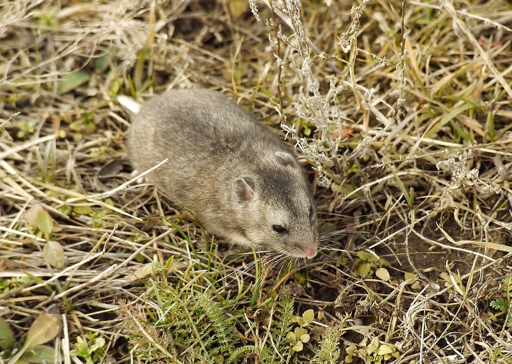
Arid habitats such as dry grassland, steppe, desert, semi-desert, and alpine meadows at elevations up to 3600 m. In Mongolia, Gray Dwarf Hamsters occupy hills and mountains, oases, and valleys with shrubs and herbaceous plants in deserts and semi-deserts. They also occur in agricultural land and gardens.
Gray Dwarf Hamsters are nocturnal and crepuscular and sometimes active during the day even when temperatures are low. They usually do not hibernate.
It digs burrow systems with nesting chambers, food storage areas, and 2-5 entrances. Burrows can be 1-5 m deep and 2 m long. It also uses natural holes and fissures in soil.
The Gray Dwarf Hamster eats roots, shoots, seeds, small fruits, green vegetation, snails, insects, and rarely small reptiles, amphibians, and other rodents. The Gray Dwarf Hamster stores up to 400-500 g of food in storage chambers and gathers plants to store in "hay piles" for winter use.
A female Gray Dwarf Hamster has up to three litters in a year. Litters have 1-13 young (usually 6-7); gestation lasts 16-21 days; and birth weights are 1-7-2-1 g. Adult colour is attained at 4-5 months old. Lifespan is up to two years.
The Gray Dwarf Hamster is solitary. Important predators are owls, foxes, and jackals.
Cricetulus longicaudatus
| Head-body | Tail | Ear | Hind foot | Weight |
|---|---|---|---|---|
| 80-135 mm | 35-48 mm | 15-20 mm | 15-21 mm | 15-50 g |
| Activity | Emerges | September at Merke |
|---|---|---|
| Nocturnal | After dark | Active. Does not hibernate. |
| Tier | Model and size | Manufacturer lists |
|---|---|---|
| Medium | LFAHD / LFATDG, 3 x 3.5 x 9 in (7.6 x 8.9 x 22.9 cm) | chipmunks, rats, flying squirrels |
Assigned on head-body to 135 mm, to 50 g. Tiers and dimensions are the manufacturer's; placing this species in one is our judgement.
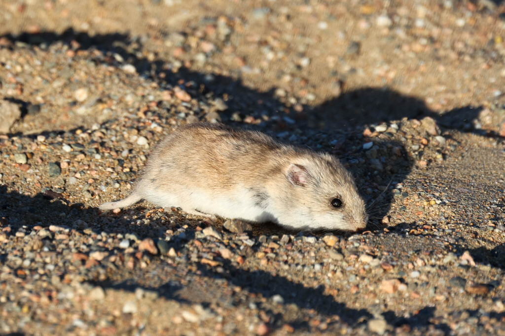
Arid areas with shrubby slopes, dry forests, mountain steppes, and foothills and southern slopes of mountains to elevations of c.1900 m. The Long-tailed Dwarf Hamster is particularly abundant in piedmont semi-desert, a type of desert grassland with mixed shrubs and succulent plants.
The Long-tailed Dwarf Hamster is nocturnal and does not hibernate.
The Long-tailed Dwarf Hamster occupies shallow, simple burrows that extend horizontally beneath the ground's surface, often constructed under rocks. Abandoned burrows of other small mammals are sometimes used, and side passages are created leading to grass-lined nest chambers.
The Long-tailed Dwarf Hamster eats plant material, mainly seeds, and insects. In late summer, it gathers and stores plants in hay piles for winter use.
Reproduction occurs in March—September, and a female produces at least two litters in a year. Litters have 4-9 young. Life span is up to two years.
Microtus arvalis
| Head-body | Tail | Ear | Hind foot | Weight |
|---|---|---|---|---|
| 93-120 mm | 24-38 mm | not given mm | not given mm | 18-40 g |
| Activity | Emerges | September at Merke |
|---|---|---|
| Crepuscular and diurnal | Varies with season and density | Active. Does not hibernate. |
| Tier | Model and size | Manufacturer lists |
|---|---|---|
| Medium | LFAHD / LFATDG, 3 x 3.5 x 9 in (7.6 x 8.9 x 22.9 cm) | chipmunks, rats, flying squirrels |
Assigned on head-body to 120 mm, to 40 g. Tiers and dimensions are the manufacturer's; placing this species in one is our judgement.
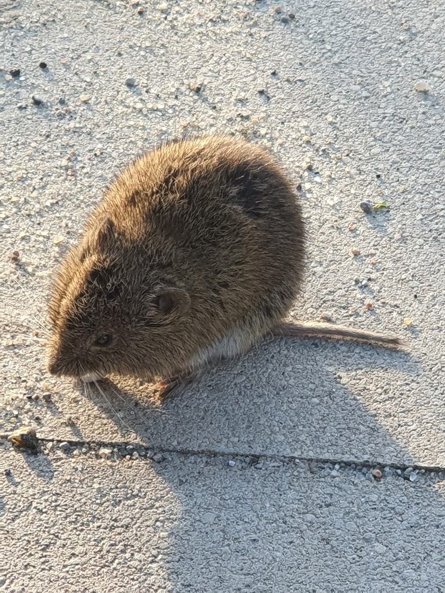
Well-drained open landscapes, typically grasslands and pastures within forest zone and alpine meadows above tree line up to elevations of c.3000 m. This Common Vole can be abundant in grain and alfalfa fields and is regarded as an agricultural pest. In short-grass habitat, it is exposed to avian predation, and therefore it seeks protection by digging underground galleries.
Common Voles are active year-round and do not hibernate. Surface activity is crepuscular and diurnal, depending on season and density. In winter, they are more active during day.
Burrows are usually short (100-150 cm long and 35 cm deep) and terminate in nest chamber and caches. Nests (8-15 cm in diameter) are woven of dry grass and are 5-15 cm below the ground's surface; they usually have 2-3 exits.
Diet consists of leaves, stems, and roots of various herbs and grasses. More than 80 plants have been identified in its diet. Depending on season, they also eat fungi, lichens, berries, nuts, seeds, bulbs, tubers, and bark. Daily consumption is c.3-6 g of dry matter.
Breeding season of the Common Vole is in March-November. In the wild, females usually have 2-3 litters/year. Numbers of embryos are 1-13/female (3-8 in 93% of females). Young are weaned at 12-21 days old. Females reach sexual maturity at a mean age of 27-4 days, although precocious breeding can occur at 13-14 days of age. Common Voles usually reproduce in their second year and then die. Autumn population mainly consists of individuals born in the same year. Survival is low, and life expectancy is 2-4 months for those born in spring compared to 7-9 months for those from autumn litters.
Common Voles are sedentary; they rarely move more than 10-20 m. Home ranges are usually 200-400 m2 for females and 1200-1500 m2 for males, although much lower median values have been reported (e.g. 125 m2 for males and 30 m2 for females). Home ranges are larger at low densities than high densities. Breeding females defend home ranges around their burrows but tolerate strange males when they are in estrus. Males are solitary and wander across their larger home ranges from one female to another to mate. Females with juveniles live in groups in large burrows. A female territorial system changes to group home ranges in winter, and the last 2-3 litters of the season overwinter in mothers' home ranges.
Ellobius tancrei
| Head-body | Tail | Ear | Hind foot | Weight |
|---|---|---|---|---|
| 96-125 mm | 10-15 mm | not given mm | not given mm | 38-60 g |
| Activity | Emerges | September at Merke |
|---|---|---|
| Active day and night, year-round | Digging peaks 06:00-10:00 and 14:00-17:00 | Active. Annual digging peak is September-October, so fresh mounds are at their most visible. |
| Tier | Model and size | Manufacturer lists |
|---|---|---|
| Medium | LFAHD / LFATDG, 3 x 3.5 x 9 in (7.6 x 8.9 x 22.9 cm) | chipmunks, rats, flying squirrels |
Assigned on head-body to 125 mm, to 60 g. Tiers and dimensions are the manufacturer's; placing this species in one is our judgement.
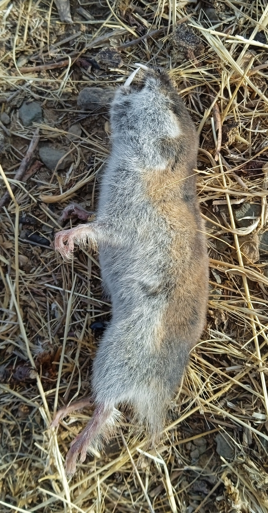
Semi-deserts and deserts on plains and in hilly regions, steppes, alpine pastures, and rocky slopes in mountains and on high plateaus. In the Tian Shan and on the Pamir Mountains, Eastern Mole Voles have been recorded up to elevations of c.4000 m. Humid places in valleys, along streams, and around lakes are preferred; moving sands are avoided.
Eastern Mole Voles are active day and night and year-round. Annual peaks of digging are in March-April and September-October, and daily peaks are at 06:00-10:00 h and 14:00-17:00 h. With increase in elevation, activity is progressively more diurnal, giving individuals advantage of higher soil temperatures. Eastern Mole Voles are fossorial and spend little time aboveground.
They live in complex burrow systems, with one or several main tunnels and numerous short side branches. Tunnels are 5-6 cm in diameter and usually at depths of 5-40 cm. About 30-40% of tunnels are plugged with soil. Mounds contain 310-4750 g (mean 1698 g) of excavated soil. Although entrances to tunnels are sealed by mounds of soil, individuals occasionally open them, presumably for ventilation.
Eastern Mole Voles feed on underground plant parts, especially starchy bulbs and tubers. Frequencies of various diet items in stomach samples were: underground plant parts 94-9%, green plant parts 39-2%, seeds 0-5%, bark 0-3%, and animals 0-5%.
Reproduction occurs in April-October, but there are regional differences. In south-eastern Kazakhstan, breeding season lasts only c.3 months. Birth rate is low and unpredictable, with intervals between litters from 32 days to c.6 months. Gestation is 26 days, and litters have 1-7 young. Females have 2-3 litters/season. Females are not sexually mature until the death of their mother.
Eastern Mole Voles live in family groups of up to ten individuals.
Lasiopodomys gregalis
Also listed as Microtus gregalis
| Head-body | Tail | Ear | Hind foot | Weight |
|---|---|---|---|---|
| 81-148 mm | 17-46 mm | 8-16 mm | 12-21 mm | 18-68 g |
| Activity | Emerges | September at Merke |
|---|---|---|
| Seasonal; autumn activity shifts toward daytime | Short bouts through the day | Active. In autumn night activity falls and daytime bouts lengthen to 15 minutes. |
| Tier | Model and size | Manufacturer lists |
|---|---|---|
| Medium | LFAHD / LFATDG, 3 x 3.5 x 9 in (7.6 x 8.9 x 22.9 cm) | chipmunks, rats, flying squirrels |
Assigned on head-body to 148 mm, to 68 g. Tiers and dimensions are the manufacturer's; placing this species in one is our judgement.
Tundra, forest-tundra, coniferous forest, forest steppe, steppe, semi-desert and desert zones, and mountain meadows up to elevations of 4200 m. In tundra, semidesert, and desert, Narrow-headed Voles prefer river valleys and lake depressions. In forests, they occur in open dry meadows.
Activity patterns of Narrow-headed Voles vary seasonally. In spring, they are active round-the-clock, appearing aboveground in short bouts 100-200 times/day. In summer, they are more active at twilight, with four-minute activity bouts, and diurnal bouts of aboveground activity last 2-4 minutes every two hours. With decreasing temperatures in autumn, night activity decreases and daily activity increases to 15 minutes/bout.
Family burrows have several large nest chambers, 12-16 cm in diameter and c.12 cm deep in summer and 21 cm deep in winter. A burrow also contains several storage chambers and system of tunnels at depths of 7-9 cm. Burrow systems of average family groups have an average of 17 entrances. Larger burrows with 100-120 entrances were also recorded.
Diet varies seasonally, but in every season, green parts of grasses, onions, and forbs are eaten. In early autumn, seeds, berries, fungi, and roots make up 7-10% of diet.
Reproduction occurs in May-July in northern parts of its distribution and April-October in southern parts, where it can even extend into winter. Litters have 2-15 young. Adult females can produce 3-4 litters/year in the north and 4-5 litters in the south. Females become sexually mature at weights of 14-16 g and can have 1-2 litters during the first year of their life.
Narrow-headed Voles live in large family groups that occupy complex burrow systems; groups consist of 10-13 residents of different sex, age, and reproductive status. All individuals in a group are amicable, share a common nest, and help to rear offspring. Mean home ranges of males are 790 m2 in spring, 1675 m2 in summer, 625 m2 in autumn, and 425 m2 in winter; those of females are 380 m2, 1150 m2, 360 m2, and 400 m2, respectively. Home ranges partially overlap, and c.22% of the area is used commonly with other individuals. Under emergency situations, Narrow-headed Voles produce alarm calls sitting at burrow entrances.
Alticola argentatus
| Head-body | Tail | Ear | Hind foot | Weight |
|---|---|---|---|---|
| 87-119 mm | 36-64 mm | not given mm | not given mm | 20.8-54.6 g |
| Activity | Emerges | September at Merke |
|---|---|---|
| Diurnal | Peaks 05:00-07:00 and 18:00-20:00 | Active. Active throughout the year. |
| Tier | Model and size | Manufacturer lists |
|---|---|---|
| Medium | LFAHD / LFATDG, 3 x 3.5 x 9 in (7.6 x 8.9 x 22.9 cm) | chipmunks, rats, flying squirrels |
Assigned on head-body to 119 mm, to ? g. Tiers and dimensions are the manufacturer's; placing this species in one is our judgement.
Rocky areas, talus slopes, and accumulations of boulders at elevations of 500-4300 m. Silver Mountain Voles avoid dense vegetation, and southern exposures are preferred.
Silver Mountain Voles are diurnal, with peaks in activity at 05:00-07:00 h and 18:00-20:00 h. They are active throughout the year. They do not dig burrows but seek shelter in fissures and cracks. Rocky shelters can be protected against adverse environmental conditions by walls constructed of stones, excrement, and urine. A shelter found in Kazakhstan was 1 m long and 10-18 cm high.
Silver Mountain Voles eat primarily roots and seeds in winter and green plants for the rest of the year. When vegetation starts growing, plants are collected, dried, and cached for winter. Seeds are transported in cheek pouches.
Pregnant Silver Mountain Voles have been recorded in February-December, but main breeding season is in March—October and May-September at high elevations. Females have 2-3 litters/year, and numbers of embryos per female is 2-9. At high elevations of Kazakhstan where breeding season is curtailed to 2-5-3 months, females have an average of 6 embryos. Young females become sexually mature and have 1-2 litters during their first year of life.
Silver Mountain Voles can move up to 500 m away from their nests. They live in kin groups of 7-9 individuals. Feces are deposited in certain places.
Pygeretmus pumilio
| Head-body | Tail | Ear | Hind foot | Weight |
|---|---|---|---|---|
| 95-135 mm | 125-175 mm | 23-31 mm | 40-56 mm | 30-78 g |
| Activity | Emerges | September at Merke |
|---|---|---|
| Crepuscular and nocturnal | 40-60 min after sunset in autumn | Marginal. Hibernation can begin at the end of September. |
| Tier | Model and size | Manufacturer lists |
|---|---|---|
| Large | XLKR / XLKSD, 3 x 3.5 x 13 in (7.6 x 8.9 x 33 cm) | kangaroo rats, ground squirrels, squirrels |
Assigned on bipedal hopper; manufacturer places kangaroo rats, the closest body type it names, in this tier. Tiers and dimensions are the manufacturer's; placing this species in one is our judgement.
Semi-desert and desert habitat in patches of sparse saltwort vegetation; in western part of the distribution, only on clay soils; in northern and eastern parts of the distribution, on clay and gravel soils.
The Dwarf Fat-tailed Jerboa is crepuscular and nocturnal. Aboveground activity usually starts 40-60 minutes after sunset in spring and autumn and 20-30 minutes after sunset in summer. Activity ends immediately before sunrise. Activity has 2-3 peaks, in the first one-half, middle, and end of the night.
Summer burrows usually consist of the initial tunnel filled with soil; nest chambers are 6-7 cm in diameter for males and non-breeding females, 10-12 cm for breeding females, and 37-51 cm deep. Night shelter burrows are simple, with one tunnel 25-90 cm long.
The Dwarf Fat-tailed Jerboa is mainly folivorous. Green plant parts dominate its diet in all parts of its distribution and in almost all seasons, comprising 60-90% by volume. Seeds can be 8-25% of diets. Insects are always minor parts of the diet.
Breeding of the Dwarf Fat-tailed Jerboa has two clear peaks: the first in spring and early summer (March—June) and the second in late summer—autumn (August—October). Litters have 1-8 young; mean litter sizes increase with age of females. One-year-old females have one litter per year, and two-year-old females usually have two litters. Overwintering females can produce up to three litters per year but yearlings only one. Gestation was estimated at 20 days. Young nurse for 35-40 days.
Home range sizes vary depending on age, season, and density; mean sizes are 1-1-2 ha for males and 0-4-0-8 ha for females. Breeding home ranges of males are twice as large as non-breeding home ranges. At low densities, home ranges of females are isolated, and those of males overlap marginally; home range of one adult male usually widely overlaps home ranges of 2-3 females. At high densities, home ranges of all individuals widely overlap, regardless of sex; each individual actively defends its own living and shelter burrows. One individual in its home range has 2-3 shelter burrows at high density and 5-12 at low density. In the wild, contact between individuals are relatively rare, even in dense populations; frequency of interactions is only 1-2/hour.
Allactaga major
| Head-body | Tail | Ear | Hind foot | Weight |
|---|---|---|---|---|
| 187-230 mm | 250-305 mm | 48-62 mm | 85-101 mm | 260-415 g |
| Activity | Emerges | September at Merke |
|---|---|---|
| Nocturnal | 40-45 min after sunset | Marginal. Hibernation can begin as early as the end of September. |
| Tier | Model and size | Manufacturer lists |
|---|---|---|
| Large | XLKR / XLKSD, 3 x 3.5 x 13 in (7.6 x 8.9 x 33 cm) | kangaroo rats, ground squirrels, squirrels |
Assigned on bipedal hopper; manufacturer places kangaroo rats, the closest body type it names, in this tier. Tiers and dimensions are the manufacturer's; placing this species in one is our judgement.
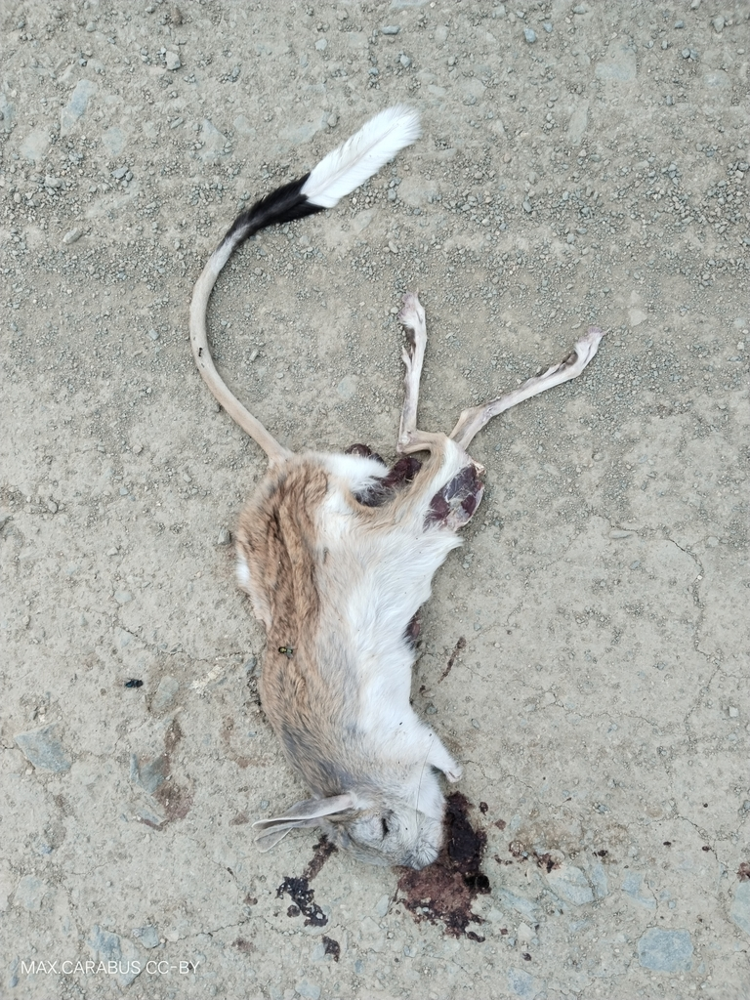
Forest steppe, steppe, semi-desert, and desert. In forest steppe and steppe, the Great Jerboa selects open areas with sparse grass cover such as pastures, along sides of dirt roads, crop fields, shores of salt lakes, and high terraces of river valleys.
The Great Jerboa is nocturnal. Aboveground activity usually starts 40-45 minutes after sunset and ends 0-5-1-5 hours before sunrise, with peak activity near end of the first one-half of night. Hibernation lasts from as early as the end of September to April.
Summer burrows usually have two main tunnels branching off the initial tunnel; nest chambers are 9-13 cm in diameter and 40-100 cm deep (usually 50-70 cm). Night shelter burrows are simple, with one tunnel 80-200 cm long.
The Great Jerboa is omnivorous. It eats seeds, insects, and green and underground parts of plants in equal amounts.
Breeding of the Great Jerboa occurs in March—August. Litters have 1-8 young. Overwintering females can produce two litters per year. Sexual maturity occurs at 9-11 months of age, after overwintering. Gestation was estimated at 25 days.
When running fast, they use asynchronous ricochet jumps. Lengths of jumps are 80-125 cm, and maximum speeds are 40-50 km/h. Escaping behavior is characterized by running fast for 60-100 m and then hiding in dense vegetation or a shelter burrow. Home ranges are 13-150 ha. One individual can have 2-6 shelter burrows in its home range. In the wild, Great Jerboas are solitary, and interactions are rare.
Dipus sagitta
| Head-body | Tail | Ear | Hind foot | Weight |
|---|---|---|---|---|
| 115-145 mm | 140-180 mm | 16-23 mm | 57-67 mm | 46-128 g |
| Activity | Emerges | September at Merke |
|---|---|---|
| Crepuscular and nocturnal | 20-90 min after sunset in autumn | Active. Hibernation runs end of October to mid-March in Kazakhstan. |
| Tier | Model and size | Manufacturer lists |
|---|---|---|
| Large | XLKR / XLKSD, 3 x 3.5 x 13 in (7.6 x 8.9 x 33 cm) | kangaroo rats, ground squirrels, squirrels |
Assigned on bipedal hopper; manufacturer places kangaroo rats, the closest body type it names, in this tier. Tiers and dimensions are the manufacturer's; placing this species in one is our judgement.
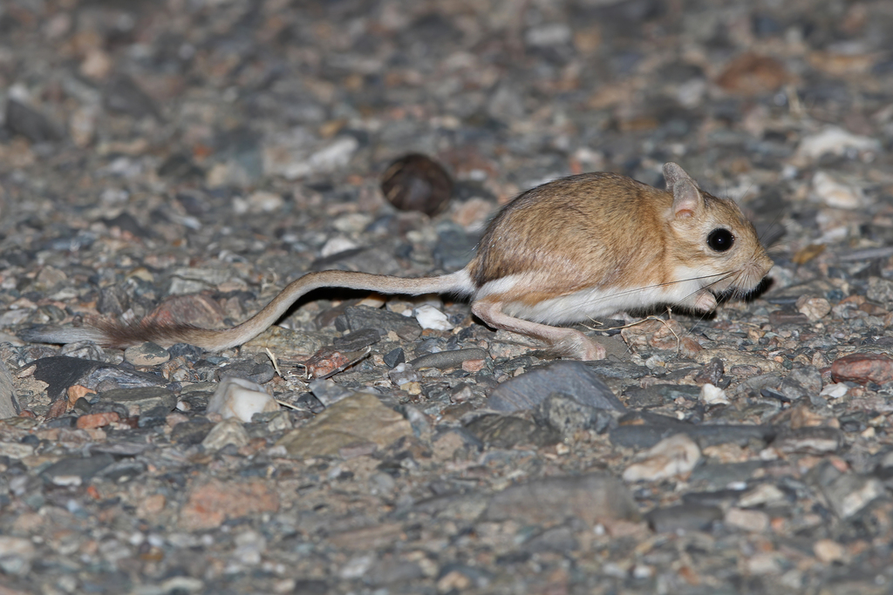
Sand massifs at different stages of sand stabilization in desert, semi-desert, and steppe zones but always with patches of pure sand without grass or forb vegetation; in the south-eastern distribution, sands, sandy-gravel, and gravel plains in desert zones.
The Northern Three-toed Jerboa is crepuscular and nocturnal. Aboveground activity starts at sunset in summer and 20-90 minutes after sunset in spring and autumn. In autumn, individuals are active only during the first one-half of the night, and length of activity can decrease to one hour. Hibernation in Russian Dagestan and Kazakhstan lasts 4-5 months from end of October to mid-March.
Burrows are simple and have one main entrance, one emergency entrance (dug up from the inside to 5-7 cm below the ground's surface), and one nest chamber 5-7 cm in diameter at depths of 35-110 cm; total lengths of tunnels are 50-400 cm. Main entrance in spring and summer usually is closed with sand plug.
Diets contain seeds and flowers (36-73%, average 51%), green plant material (16-54%, average 35%), roots and bulbs (0-40%, average 10%), and insects (1-11%, average 4%).
Breeding patterns of Northern Three-toed Jerboas vary geographically. In western part of the distribution, breeding usually has two peaks, in spring/early summer and late summer/early autumn, with a mid-summer interruption. Litters have 1-8 young. Overwintering females have 2-3 litters/year. Yearlings born in spring are sexually mature by the next autumn. Gestation has been estimated at 25-30 or 35 days. Young nurse for c.40 days.
Average movements of Northern Three-toed Jerboas are 450-600 m/h in the first one-half of the night and up to 1300 m/h in the second. Total lengths of one-night movements are 1-2 km for females and 4-8 km (but up to 11 km) for males and subadults. Home range size varies geographically and with habitat productivity from 4 ha to 19-22 ha in males and from 2-9 ha to 12-15 ha in females. At low and moderate densities, home ranges of females are isolated, but home ranges of males overlap those of other males and females. When young individuals first exit their mother's burrow and for some days after, they move together connected like a "train": the first young holds its mother's tail at the base, the second young holds the tail of the first, and so on.
Scarturus elater
Also listed as Allactaga elater
| Head-body | Tail | Ear | Hind foot | Weight |
|---|---|---|---|---|
| 90-120 mm | 140-190 mm | 28-41 mm | 43-58 mm | 32-77 g |
| Activity | Emerges | September at Merke |
|---|---|---|
| Crepuscular and nocturnal | 15-25 min after sunset | Active. Hibernation begins mid-October at the earliest. |
| Tier | Model and size | Manufacturer lists |
|---|---|---|
| Large | XLKR / XLKSD, 3 x 3.5 x 13 in (7.6 x 8.9 x 33 cm) | kangaroo rats, ground squirrels, squirrels |
Assigned on bipedal hopper; manufacturer places kangaroo rats, the closest body type it names, in this tier. Tiers and dimensions are the manufacturer's; placing this species in one is our judgement.
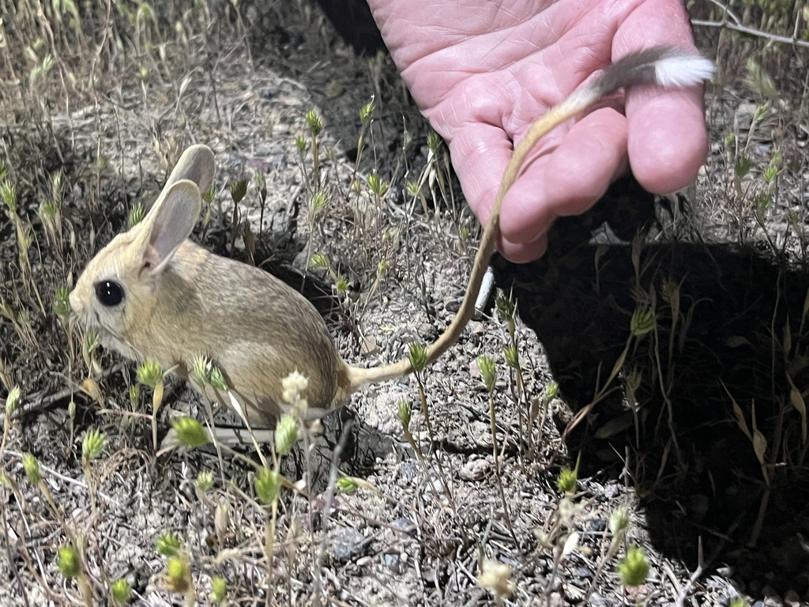
Desert and semi-desert zones, avoiding only large open spaces completely lacking shrubs and areas with very dense vegetation. The Small Five-toed Jerboa does not live in sand but is able to cross sandy areas and occupy small patches of hard soil in large sand massifs.
The Small Five-toed Jerboa is crepuscular and nocturnal. Most individuals become active at dusk, 15-25 minutes after sunset. In spring and summer, individuals are active all night, but in autumn, their activity is usually limited to the first one-half of the night. Hibernation in Kazakhstan and Central Asia lasts 2-5—4-5 months from mid-October to early December to mid-February/March, with interruptions during thaws.
Summer burrows are simple and usually have one main tunnel starting at the ground's surface, typically with a plugged entrance and ending in a nest chamber 10-13 cm in diameter and 10-115 cm deep (usually 40-70 cm); lengths of tunnels are 45-300 cm. In most cases, burrows have 1-2 additional tunnels ending with emergency exits and several (up to seven) additional chambers. Small Five-toed Jerboas usually do not build special night shelter burrows but use burrows of other rodents as night shelters.
In northern parts of the distribution, they feed mainly (c.80% by volume) on seeds, but in southern parts, seeds and green plant parts are eaten in equal proportions. Insects and underground plant parts are consistent but minor parts of the diet.
Breeding patterns of Small Five-toed Jerboas vary geographically. In western and northern parts of the distribution, breeding usually peaks in spring and late summer/early autumn, with a mid-summer interruption. Litters have 1-9 young. Overwintering females produce 2-3 litters/year. Yearlings born in spring become sexually matured in the next autumn at 2-5-3-5 months old. Gestation was estimated by different authors at 20-21 days. Young nurse for 35-40 days.
Maximum hop is 202 cm, and maximum speed is 8:3 m/s. Escape behavior is characterized by running fast, with frequent changes in direction, vertical jumps, jumps into shrub canopy, and finally hiding under a shrub. At high density, mean home range is 1-1 ha for males and 0-81 ha for females, and home ranges widely overlap regardless of sex. At low density, home ranges can be 4-6-40 ha. In the wild, they are mainly solitary but relatively frequently can be seen in groups of 2-3 individuals.
Stylodipus telum
| Head-body | Tail | Ear | Hind foot | Weight |
|---|---|---|---|---|
| 110-130 mm | 130-170 mm | 15-20 mm | 46-55 mm | 45-73 g |
| Activity | Emerges | September at Merke |
|---|---|---|
| Crepuscular and nocturnal | 30-60 min after sunset in autumn | Active. Hibernation runs end of October to March/April. |
| Tier | Model and size | Manufacturer lists |
|---|---|---|
| Large | XLKR / XLKSD, 3 x 3.5 x 13 in (7.6 x 8.9 x 33 cm) | kangaroo rats, ground squirrels, squirrels |
Assigned on bipedal hopper; manufacturer places kangaroo rats, the closest body type it names, in this tier. Tiers and dimensions are the manufacturer's; placing this species in one is our judgement.
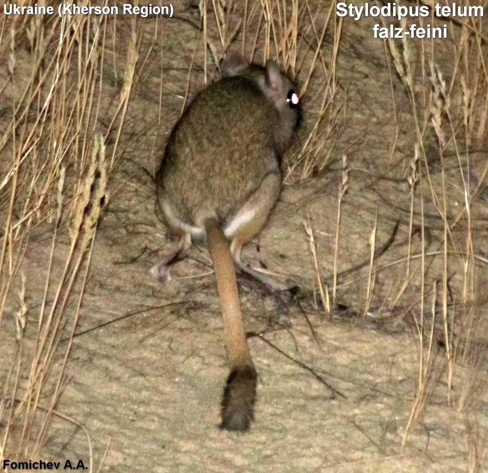
In western and northern peripheries of the distribution, stabilized sands in steppe zone; in central part of distribution, sandy-loam soils in semi-desert and desert zones; in southern part of distribution, clay soils in desert zone; and in eastern part of distribution, coarse-gravel hill slopes in semi-desert zone.
The Thick-tailed Three-toed Jerboa is crepuscular and nocturnal. Aboveground activity starts 60-90 minutes before sunset in spring and 30-60 minutes after sunset in summer and autumn. Autumn activity ends after midnight.
Burrows have one main entrance, 1-3 emergency entrances, one nest chamber 12-15 cm in diameter at depths of 80-130 cm, and 1-3 additional chambers 9-10 cm in diameter; total lengths of tunnels are 130-530 cm, usually 150-200 cm. Main entrance usually is closed with soil plug. Night shelter burrows are simple, with one tunnel 30-300 cm long. One individual has 3-12 shelter burrows in its home range.
Diet contains about equal amounts of seeds and green plant material; insects are rarely eaten. Seeds dominated diets in autumn and green plant parts in spring.
Breeding of the Thick-tailed Three-toed Jerboa occurs in April-June, with one peak in April-May. Litters have 2-8 young. Overwintering females produce one litter per year. Individuals are sexually mature at 10-11 months of age, after overwintering. Gestation has been estimated at 19-20 or 35 days. Young nurse for c.45 days.
Average home ranges of Thick-tailed Three-toed Jerboas are 0-27-0-28 ha for males and 0-23 ha for females. Home ranges of females are isolated; home ranges of males widely overlap home ranges of females but only marginally with other males. Interactions of individuals in the wild are mainly amicable or neutral, and two individuals can forage side by side.
Hemiechinus auritus
| Head-body | Tail | Ear | Hind foot | Weight |
|---|---|---|---|---|
| 160-278 mm | 10-55 mm | 24-60 mm | 30-55 mm | 230-400 g |
| Activity | Emerges | September at Merke |
|---|---|---|
| Nocturnal | Early evening | Active. Torpor is facultative and mostly later in the year. |
| Tier | Model and size | Manufacturer lists |
|---|---|---|
| Large | XLKR / XLKSD, 3 x 3.5 x 13 in (7.6 x 8.9 x 33 cm) | kangaroo rats, ground squirrels, squirrels |
Assigned on head-body to 278 mm, to 400 g. Tiers and dimensions are the manufacturer's; placing this species in one is our judgement.
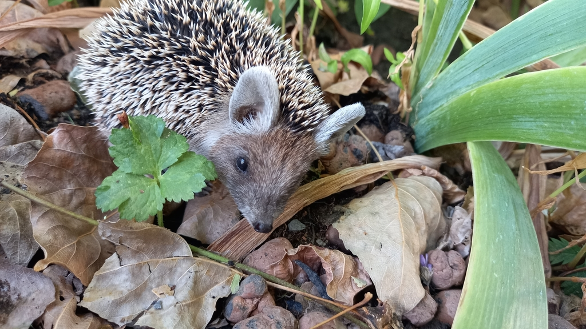
Dry riverbeds, dunes, oases, valleys with shrubs, semiarid country, and steppes over most of its distribution. It favors mesic sites such as suburban parks and gardens, olive groves, and agricultural lands and is commonly associated with humans. It selects soft ground such as sandy dunes where it can dig relatively deep burrows that slope at a slight angle.
The Common Long-eared Hedgehog is nocturnal and begins foraging early in the evening. Day-resting sites usually are in burrows that are under small shrubs or bushes. Burrows are 20-150 cm long and have a single opening. It can enter torpor in any season during droughts, shortages of food, and cold or hot weather.
The Common Long-eared Hedgehog is omnivorous, it is a voracious feeder, and it can survive for up to ten weeks without eating or drinking. Diet primarily is insects (bugs, beetles, grasshoppers, termites, lepidopterans, ants), but it also eats other invertebrates (worms, millipedes, and snails), small vertebrates, eggs, carrion, fruits, and seeds.
The Common Long-eared Hedgehog is polygynous. Breeding probably occurs immediately after emerging from hibernation in early spring (mid-April) and continues into late summer (September). Gestation lasts 28-42 days. Births peak in July-September. Litters vary geographically but usually have 3-5 young (range 1-7). There is no evidence that more than one litter is produced each year. Longevity is 6-7 years.
Estimates indicate that the Common Long-eared Hedgehog can travel 7-9 km in a 7-9 hour activity period. Average home ranges are 4-9-5 ha (range 1-6-10 ha) for adult males, 2-9 ha (range 0-9-4-2 ha) for non-lactating females. The Common Long-eared Hedgehog is solitary. Adults only nest singly, but they use burrows of other hedgehogs in their absence.
Rhombomys opimus
| Head-body | Tail | Ear | Hind foot | Weight |
|---|---|---|---|---|
| 150-185 mm | 130-160 mm | 12-19 mm | 36-47 mm | 169-275 g |
| Activity | Emerges | September at Merke |
|---|---|---|
| Diurnal, most active at dawn | Dawn | Active. No hibernation stated. |
| Tier | Model and size | Manufacturer lists |
|---|---|---|
| Medium | LFAHD / LFATDG, 3 x 3.5 x 9 in (7.6 x 8.9 x 22.9 cm) | chipmunks, rats, flying squirrels |
Assigned on head-body to 185 mm, to 275 g. Tiers and dimensions are the manufacturer's; placing this species in one is our judgement.
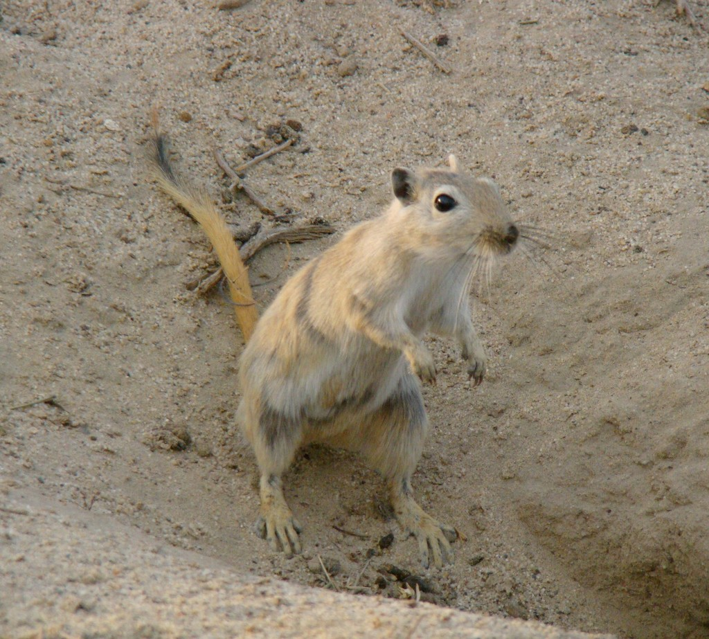
Sandy or clay deserts, with a local preference for dry riverbeds and shrubby vegetation.
Diurnal, and most active at dawn. Great Gerbils are terrestrial, digging very elaborate burrow systems with long, deep tunnels, nest chambers, and foraging chambers. In winter the nest may be situated 2-5 m below the surface.
Diet is based on high plant diversity. It includes stems, leaves, and branches of small bushes, especially Haloxylon ammodendron, or succulent bushes such as Salsola. Diet varies seasonally, depending on plant availability.
Reproduction occurs throughout year, with a reduction in summer. Litter size is 1-14.
In Uzbekistan, Great Gerbils are not very social and form small family groups consisting of one male and six females. The groups are flexible and are able to adjust their territories to unpredictable climatic and environmental conditions. When food is limited females are generally solitary, and when conditions are better they share their territory with other females of the same family group. Males mark their burrows with urine, feces and ventral-gland secretions, and chase other males. When a predator appears, three different alarm vocalizations have been described and these seem to act as alert signals: first is a rhythmic repetition of a single note, then a faster and more intense call, and then a single whistle. Hindfoot drumming in reaction to alarm vocalizations has been reported.
Meriones libycus
| Head-body | Tail | Ear | Hind foot | Weight |
|---|---|---|---|---|
| 123-170 mm | 115-190 mm | 15-22 mm | 32-41 mm | 60-140 g |
| Activity | Emerges | September at Merke |
|---|---|---|
| Generally nocturnal, sometimes diurnal | After dark; feeds by day in Pakistan | Active. Torpor only in colder regions and later in the year. |
| Tier | Model and size | Manufacturer lists |
|---|---|---|
| Medium | LFAHD / LFATDG, 3 x 3.5 x 9 in (7.6 x 8.9 x 22.9 cm) | chipmunks, rats, flying squirrels |
Assigned on head-body to 170 mm, to 140 g. Tiers and dimensions are the manufacturer's; placing this species in one is our judgement.
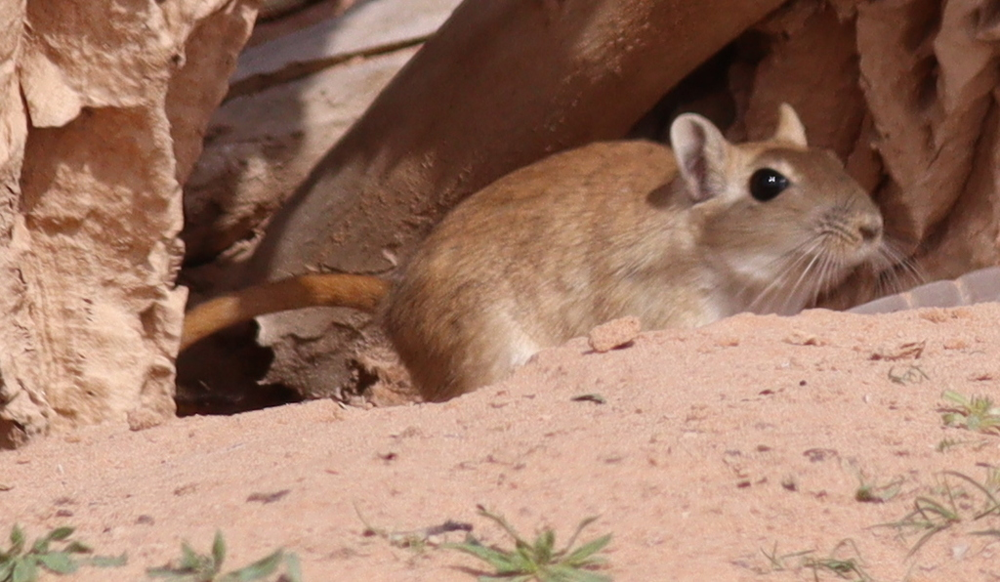
Libyan Jirds prefer low-lying areas in arid and semiarid areas (steppes, semideserts, deserts) with compact and hard soil. They avoid mountain slopes and rocky regions. They require sparse and bushy vegetation, such as tamarisk, palm, or acacia groves.
Although generally nocturnal, the Libyan Jird may be diurnal in north-western China. It is terrestrial, digging burrows in ephemeral riverbeds and in shallow depressions where small bushes are present. In Pakistan it feeds during day and signals danger with foot-drumming.
Burrows are established at base of small bushes and on small hills. Burrows have 2-8 entrances with tunnels leading to at least one food-storage room of c.30 cm diameter. There may be two systems of sinuous galleries connected by a single tunnel.
Libyan Jirds are granivorous and herbivorous. Seeds and grasses, cereals, fruit seeds, rhizomes, bulbs, and succulent plants are favored, and these are stored in burrows. Libyan Jirds require very limited amounts of water.
Libyan Jirds breed throughout year. Females may bear 3-13 embryos, gestation period is 24 days, and each litter contains 2-7 offspring. Young are born naked and blind, hairs appear after four days, eyes open between day 12 and day 17. Sexual maturity is reached at three months.
Libyan Jirds live in small groups but not sharing same burrows. In China, they may occupy same habitat and burrows as Great Gerbil and may live in large groups of 25-30 individuals during winter. The species is mobile and changes burrow frequently or migrates when environmental conditions deteriorate. In Pakistan, males shown to have larger home range diameters than females (44-9 m vs. 39-9 m). In Turkmenistan these ranges may be larger, up to 120 m.
Meriones meridianus
| Head-body | Tail | Ear | Hind foot | Weight |
|---|---|---|---|---|
| 90-144 mm | 85-135 mm | 10-19 mm | 25-34 mm | 24-60 g |
| Activity | Emerges | September at Merke |
|---|---|---|
| Primarily nocturnal, sometimes daytime in winter | After dark | Active. Does not hibernate. |
| Tier | Model and size | Manufacturer lists |
|---|---|---|
| Medium | LFAHD / LFATDG, 3 x 3.5 x 9 in (7.6 x 8.9 x 22.9 cm) | chipmunks, rats, flying squirrels |
Assigned on head-body to 144 mm, to 60 g. Tiers and dimensions are the manufacturer's; placing this species in one is our judgement.
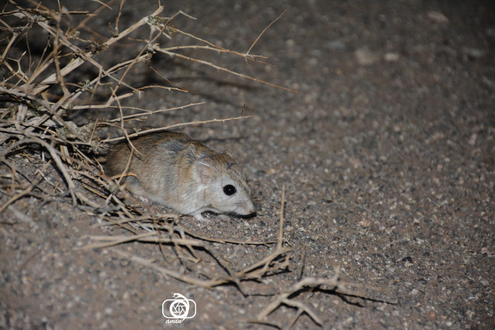
Found in all sandy deserts of Central Asia, but may occasionally live in steppic zones. The Midday Jird inhabits sand dunes, steppes, grasslands, cultivated fields, and fallow lands in arid zones.
The Midday Jird is primarily nocturnal, but active also in morning or during day in winter. This terrestrial rodent digs deep burrows at base and under roots of thorn scrub.
Plants, seeds, and insects constitute the diet of Midday Jirds. They store food in their burrows and do not hibernate.
Reproduction can occur throughout year, but is mostly in April-September in northern parts and February/March—October in southern parts, with a reduction in breeding activity during winter months. Litter size is 1-12, with average of six.
Information suggests that Midday Jirds congregate in large colonies, with clear social structure.
Meriones tamariscinus
| Head-body | Tail | Ear | Hind foot | Weight |
|---|---|---|---|---|
| 135-190 mm | 115-150 mm | 15-21 mm | 32-39 mm | 60-180 g |
| Activity | Emerges | September at Merke |
|---|---|---|
| Nocturnal | After dark | Active. No hibernation stated. |
| Tier | Model and size | Manufacturer lists |
|---|---|---|
| Medium | LFAHD / LFATDG, 3 x 3.5 x 9 in (7.6 x 8.9 x 22.9 cm) | chipmunks, rats, flying squirrels |
Assigned on head-body to 190 mm, to 180 g. Tiers and dimensions are the manufacturer's; placing this species in one is our judgement.
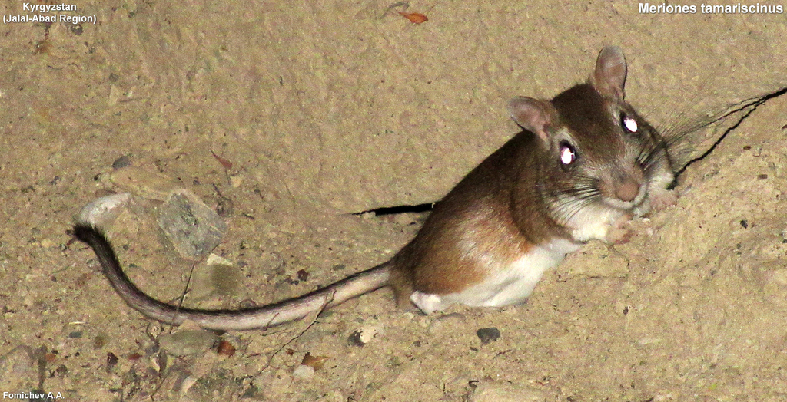
Deserts and semi-deserts with small bushes and grasslands, wadis, and saline marshes.
Nocturnal and terrestrial, the Tamarisk Jird digs burrows beneath tree roots and bushes. Burrows have several openings and can reach 6 m in length and 2:5 m in depth.
Tamarisk Jirds are omnivorous, consuming vegetable matter, fruits, seeds, and insects. They will store food in burrows, and up to 4-5 kg of dry plants and seeds have been reported in some cases.
A large jird. The Tamarisk Jird has rusty-brown dorsal pelage and pure white venter. Soles of hindfeet are hairy. Tail is bicolored, smaller than body length, and has no pencil at end.
Reproduction can take place during entire year, but is reduced during winter. Litter size is 1-8 offspring.
Tamarisk Jirds have a home range of around 1-2 km, and they are generally found in small family or colony groups with low population densities (20-30 ind/ha). They are not considered social rodents.
Hystrix indica
| Head-body | Tail | Ear | Hind foot | Weight |
|---|---|---|---|---|
| 455-930 mm | 60-170 mm | 40-47 mm | 95-104 mm | 8000-27000 g |
| Activity | Emerges | September at Merke |
|---|---|---|
| Strictly nocturnal | Varies with season; avoids bright moonlight in winter | Active. |
| Tier | Model and size | Manufacturer lists |
|---|---|---|
| Too large | no Sherman model fits | record the sighting or sign; do not expect a capture |
Assigned on reaches 27000 g, well above the largest model's intended animals. Tiers and dimensions are the manufacturer's; placing this species in one is our judgement.
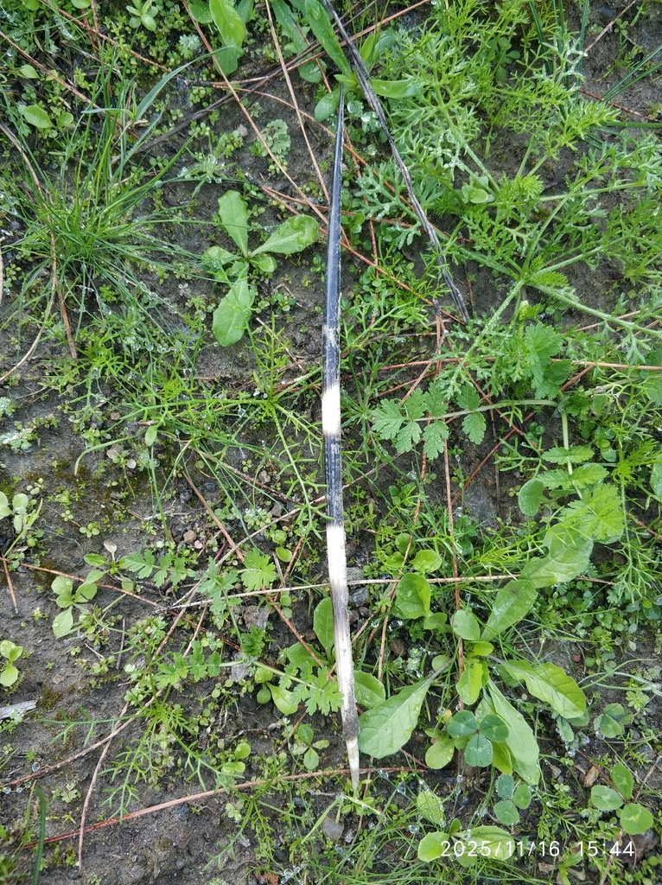
Wide variety of natural, agricultural, and urbanized habitats. Distribution of the Indian Crested Porcupine is centered in steppe biomes and also includes desert margins and relatively mesic zones.
Indian Crested Porcupines are strictly nocturnal. They spend daytime hours in dens (natural caves or excavated burrows). In winter, they largely confine their behavior to darker nights or darker periods of the night and strongly avoid bright moonlight.
In deserts east of the Caspian Sea, Indian Crested Porcupines dig complicated burrow systems in compacted dunes and clay embankments. Main tunnels are more than 10-16 m long, ending in a deep living chamber. Chambers may be used by clans for decades.
The Indian Crested Porcupine is generalist herbivore. It eats at least 18 species of geophytes (tubers, bulbs, corms, rhizomes and other subterranean structures) and hemicryptophytes. It also eats grains and fruits.
The Indian Crested Porcupine is monogamous. In Pakistan, breeding has been recorded in March-April. Females give birth to litters of 1-4 young in "maternity chambers," cushioned with grass or leaves. Eyes open at or within a few hours of birth. From birth to about three months of age, young are cared for by their fathers that perform all of the same parental care behaviors as their mothers, except nursing.
Indian Crested Porcupines live alone or in family groups. They spend daylight hours in communal dens in family units or clans. Chambers may be used by clans for decades. Home ranges averaged 1-5 km2, and individuals typically moved 2-8 km/night. Densities in different habitats in Israel are: 4 ind/km2 on coastal plains, 2-1 ind/km2 in semiarid natural areas, and 7-5 ind/km2 in agricultural areas.
Lepus tolai
| Head-body | Tail | Ear | Hind foot | Weight |
|---|---|---|---|---|
| 400-590 mm | 72-110 mm | 80-120 mm | 110-127 mm | 1700-2700 g |
| Activity | Emerges | September at Merke |
|---|---|---|
| Nocturnal | After dark; rests in forms by day | Active. |
| Tier | Model and size | Manufacturer lists |
|---|---|---|
| Too large | no Sherman model fits | record the sighting or sign; do not expect a capture |
Assigned on reaches 2700 g, well above the largest model's intended animals. Tiers and dimensions are the manufacturer's; placing this species in one is our judgement.
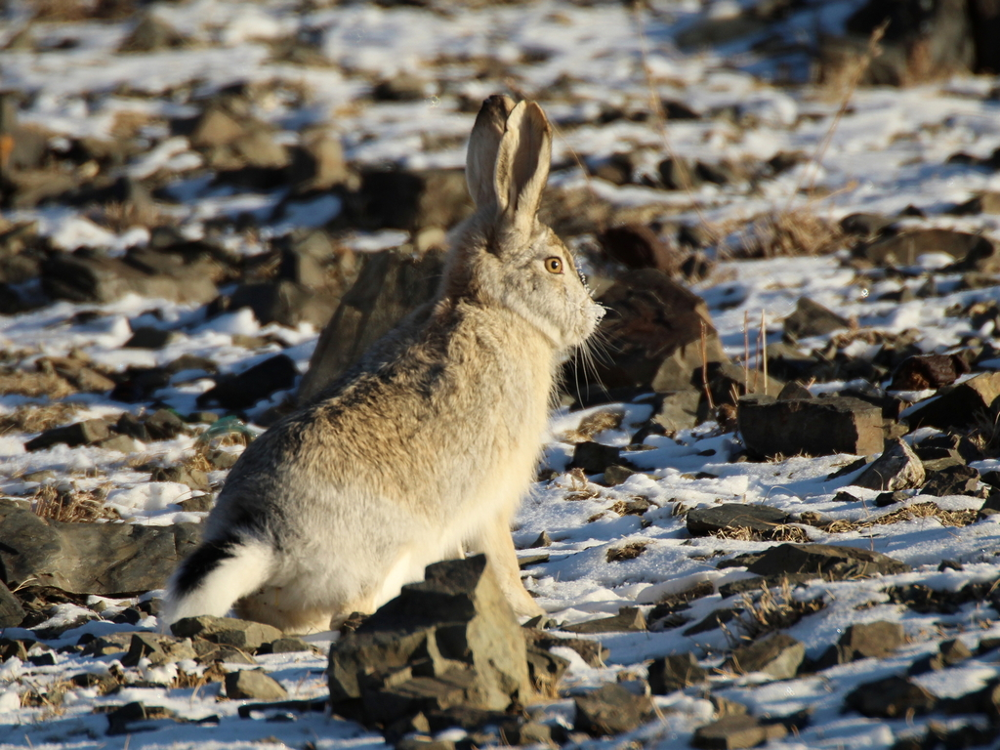
Grassland and forest meadows (never true forests), with tall grasses or shrubby areas for cover in China and semi-desert, mountain-steppe, forest steppe, and rocky habitat in Mongolia. Forms are created using the front paws. Depths of forms are less during hot weather than when it is cold and windy.
The Tolai Hare is nocturnal. Forms are used for resting during daytime.
Diet of the Tolai Hare consists of grass, roots, and herbaceous vegetation. Individuals use fixed and restricted routes while foraging.
The Tolai Hare has 2-3 litters/year, with 2-6 young/litter. Females give birth in burrows.
There is no information available for this species.
Rattus norvegicus
| Head-body | Tail | Ear | Hind foot | Weight |
|---|---|---|---|---|
| 160-290 mm | 122-250 mm | 15-26 mm | 30-50 mm | 195-540 g |
| Activity | Emerges | September at Merke |
|---|---|---|
| Primarily nocturnal, most activity before midnight | Shortly before or after sunset | Active. |
| Tier | Model and size | Manufacturer lists |
|---|---|---|
| Large | XLKR / XLKSD, 3 x 3.5 x 13 in (7.6 x 8.9 x 33 cm) | kangaroo rats, ground squirrels, squirrels |
Assigned on head-body to 290 mm, to 540 g. Tiers and dimensions are the manufacturer's; placing this species in one is our judgement.
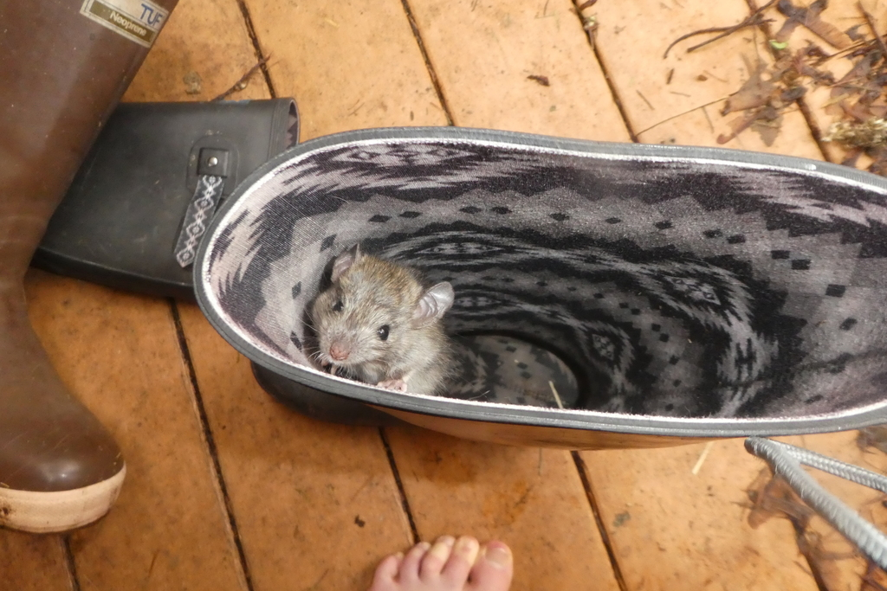
Historically, moist primary forests and fields and now typically disturbed habitats of all kinds, including almost every major city and agricultural and arable land. In cities, it generally stays in moist, wet areas that are dark and provide secluded nesting areas.
Brown Rats are primarily nocturnal, and most activity tends to occur before midnight, after which very few rats are seen. For the most part, foraging occurs shortly before or after sunset. Bad weather will generally discourage rats from doing anything outside their nests/shelters.
Brown Rats are very opportunistic omnivores and eat a wide variety of fruits, seeds, vegetation, carrion, birds, small mammals, invertebrates, and human trash.
Exploration is common, but they can be neophobic toward food and other objects; individuals will cautiously approach and smell or touch an unfamiliar object and then dart away quickly.
Reproduction occurs year-round in all regions and is constant in good conditions. They can have up to 5 litters/year, although there are peaks in summer and autumn. Gestation is c.3 weeks, and litters usually have 3-7 young. Brown Rats generally only live c.1 year in the wild, with 90-95% mortality yearly.
Brown Rats nest communally with many individuals in a single large nest or with one individual in a small nest. Cooperative behavior is a result of their hierarchal social structure in large nests with more dominant individuals. Dominance plays an important role in population regulation because relative dominance in a group hierarchy determines access to resources and mates. Density is highest during late summer and early autumn. Brown Rats are cautious yet inquisitive. Dispersal from nests is generally very short, with individuals usually staying close to their natal nests.
Apodemus uralensis
| Head-body | Tail | Ear | Hind foot | Weight |
|---|---|---|---|---|
| 70-105 mm | 65-110 mm | 12-16 mm | 17-22 mm | 13-28 g |
| Activity | Emerges | September at Merke |
|---|---|---|
| Nocturnal | After dark | Active. No hibernation stated. |
| Tier | Model and size | Manufacturer lists |
|---|---|---|
| Small | SFA / SNA, 2 x 2.5 x 6.5 in (5.1 x 6.4 x 16.5 cm) | mice, shrews, voles |
Assigned on head-body to 105 mm, to 28 g. Tiers and dimensions are the manufacturer's; placing this species in one is our judgement.
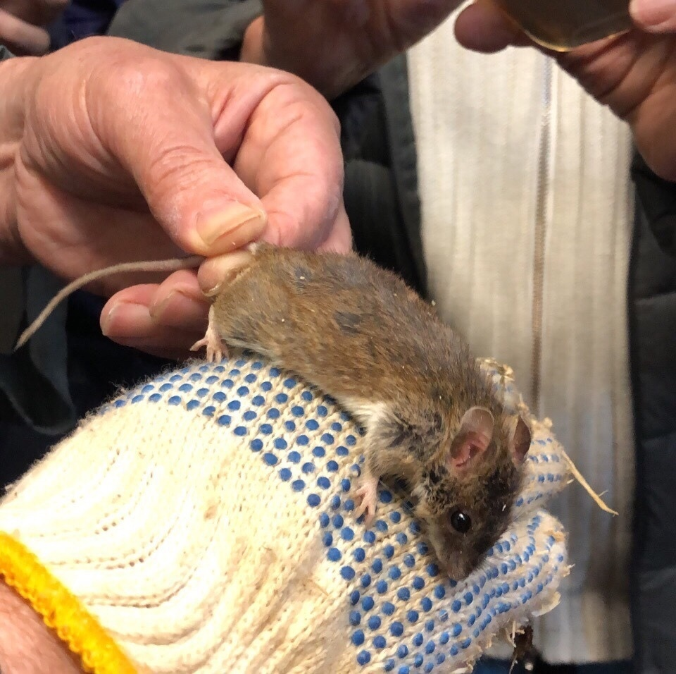
Prefers forest edge and open habitats adjacent to woodland. In Europe, the Herb Field Mouse is found in a variety of habitats, including arable fields, dry grassland, and humid woodland. It is an ecotonic species, occurring where forests adjoin open habitat, and rarely found inside forests. Found from sea level to at least 1400 m.
Herb Field Mice are nocturnal, arboreal, and subterranean. Nests are either in trees or in burrows or natural subterranean shelters.
The dominant food of this species is seeds of plants and grasses, followed by fruits and a low proportion of insects. The Herb Field Mouse is a good climber and jumper. It forages in trees or in/on the ground.
Litter size is 3-7.
No information.
Mus musculus
| Head-body | Tail | Ear | Hind foot | Weight |
|---|---|---|---|---|
| 70-103 mm | 67-104 mm | 12-17 mm | 14-20 mm | 12-39 g |
| Activity | Emerges | September at Merke |
|---|---|---|
| Crepuscular and nocturnal | After dark | Active. |
| Tier | Model and size | Manufacturer lists |
|---|---|---|
| Small | SFA / SNA, 2 x 2.5 x 6.5 in (5.1 x 6.4 x 16.5 cm) | mice, shrews, voles |
Assigned on head-body to 103 mm, to 39 g. Tiers and dimensions are the manufacturer's; placing this species in one is our judgement.
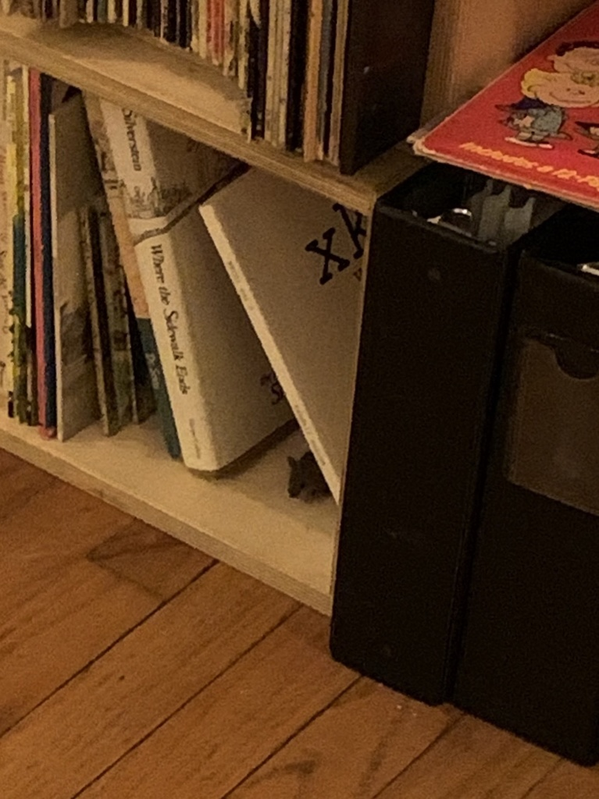
Mostly commensal and found in a very wide range of man-made habitats. It does not make sophisticated burrows and can nest in a wide variety of environments.
House Mice are terrestrial, and crepuscular and nocturnal.
House Mice are omnivorous, with invertebrates forming the greater part of the diet, followed by seeds and other plant material.
Reproduction in commensal populations tends to reflect food availability; litter size and frequency seem to be lower in winter. Gestation period is 20-25 days, and a female may bear 1-11 embryos. In the wild, reproduction reaches a peak in spring and autumn.
The House Mouse is flexible in its social life. In commensal populations, females are not aggressive toward each other, while in non-commensal situations there is a high degree of intolerance. House Mice live in colonies or extended family clans. In wild mice, each colony is dominated by a single male, which is able to mate more often than the others. Subgroups are composed of a dominant male, 2-5 females and up to three subordinate males and juveniles. House Mice have strong female groups, with close kin associated in a territory.
Nesokia indica
| Head-body | Tail | Ear | Hind foot | Weight |
|---|---|---|---|---|
| 150-205 mm | 91-150 mm | 16-23 mm | 29-39 mm | 96-320 g |
| Activity | Emerges | September at Merke |
|---|---|---|
| Nocturnal | After dark | Active. |
| Tier | Model and size | Manufacturer lists |
|---|---|---|
| Large | XLKR / XLKSD, 3 x 3.5 x 13 in (7.6 x 8.9 x 33 cm) | kangaroo rats, ground squirrels, squirrels |
Assigned on head-body to 205 mm, to 320 g. Tiers and dimensions are the manufacturer's; placing this species in one is our judgement.
Tropical and subtropical dry deciduous forests, scrublands, grasslands, arable land, pastures, and plantations from sea level to elevations of c.1600 m. Short-tailed Bandicoot Rats prefer areas with moist soil near permanent water sources.
The Short-tailed Bandicoot Rat is nocturnal; foraging, general movements on the ground's surface, and probably breeding occur at night. It is terrestrial but primarily fossorial, creating burrow systems in moist soils, consisting of a few to many tunnels, storage chambers, and nesting chamber.
Storage chambers are not lined with vegetation and are expansive; nesting chambers are lined with finely chewed vegetation and are smaller (c.30 cm wide). Burrows are usually 15-60 cm underground and have been found in canals. Burrows can be as long as 23 m.
The Short-tailed Bandicoot Rat is herbivorous, subsisting on foods found while digging burrows and plants around their burrow. Diets contain roots, grasses, grains, vegetables, and fruits from cultivated fields.
Short-tailed Bandicoot Rats seem to reproduce year-round, although activity peaks in monsoon season. Litters have 1-10 young; gestations last c.17 days. Females can breed multiple times a year, usually c.3 times.
Runways over the surface connect burrows. Usually, only a single individual or a female with young/juveniles occupies a burrow.
Sylvaemus witherbyi
Also listed as Apodemus witherbyi
| Head-body | Tail | Ear | Hind foot | Weight |
|---|---|---|---|---|
| 77-110 mm | 75-118 mm | 14-18 mm | 19-24 mm | 16-34 g |
| Activity | Emerges | September at Merke |
|---|---|---|
| Nocturnal | After dark | Active. |
| Tier | Model and size | Manufacturer lists |
|---|---|---|
| Small | SFA / SNA, 2 x 2.5 x 6.5 in (5.1 x 6.4 x 16.5 cm) | mice, shrews, voles |
Assigned on head-body to 110 mm, to 34 g. Tiers and dimensions are the manufacturer's; placing this species in one is our judgement.
The Steppe Field Mouse can live in wide variety of environments. In Turkey it has been found both in open habitats and in cedar forests, as well as in shrublands and degraded forest. It needs shrub cover as well as some rocky areas in open grasslands and is found at up to 2800 m.
Steppe Field Mice are nocturnal and terrestrial.
The Steppe Field Mouse is an omnivorous species, but food consists predominantly of seeds and acorns, followed by fruits, flowers, stems, mushrooms, insects, snails, and earthworms.
Reproduction may be more common in spring and summer. Litter size, estimated from numbers of embryos and placental scars, is 1-7.
No information.
Apodemus agrarius
| Head-body | Tail | Ear | Hind foot | Weight |
|---|---|---|---|---|
| 75-120 mm | 65-115 mm | 12-15 mm | 17-22 mm | 16-38 g |
| Activity | Emerges | September at Merke |
|---|---|---|
| DIURNAL or crepuscular | Daytime and twilight | Active. No hibernation stated. |
| Tier | Model and size | Manufacturer lists |
|---|---|---|
| Medium | LFAHD / LFATDG, 3 x 3.5 x 9 in (7.6 x 8.9 x 22.9 cm) | chipmunks, rats, flying squirrels |
Assigned on head-body to 120 mm, to 38 g. Tiers and dimensions are the manufacturer's; placing this species in one is our judgement.
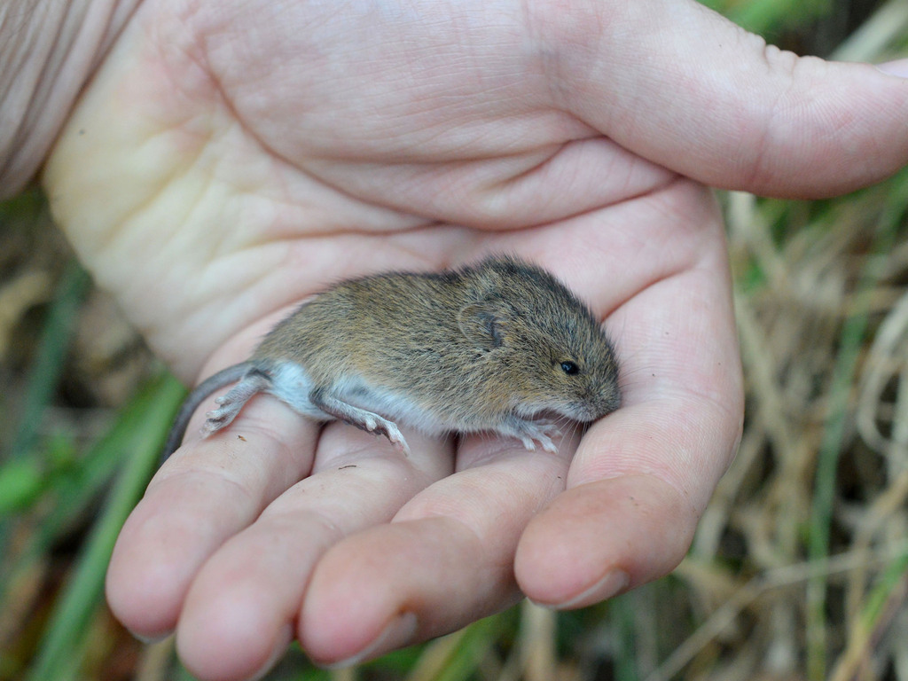
Striped Field Mice prefer edges of forest or woodland. They are found also in cultivated fields, gardens, reedbeds, and marshes, and sometimes enter barns and buildings in autumn. A microhabitat study showed that this species non-randomly selects habitats with dense shrub layer and very dense Rubus hirtus (Rosaceae) undergrowth with little or no tree-canopy cover.
Striped Field Mice are terrestrial, and diurnal or crepuscular. Climbing activity is moderate compared with that of congeners. They dig simple underground burrows of 30-40 cm depth, with nest chamber lined with dry plants, and with three or four entrances.
Diet consists of seeds, buds, fruits, and berries in variable proportions, supplemented by insects, worms, and mollusks.
Reproduction occurs in spring and summer. Litter size is 1-10.
The Striped Field Mouse is an active, non-aggressive rodent. A study in Serbia from 1997 to 2000 showed that populations fluctuate, with peak numbers recorded in April (21 ind/ha) and September (32 ind/ha). Recaptures gave mean observed travel distances of 40-6 m for males and 30 m for females. Home ranges varied from 100 m2 to 2400 m2 (average for males 716 m2, for females 585 m2), with no significant difference between sexes.
Ochotona rutila
| Head-body | Tail | Ear | Hind foot | Weight |
|---|---|---|---|---|
| 190-260 mm | none mm | 26-30 mm | 33-39 mm | 220-320 g |
| Activity | Emerges | September at Merke |
|---|---|---|
| Mainly diurnal | Sunrise to evening dusk | Active. Hay-hoarding lasts until September, so hay piles are a reliable sign. |
| Tier | Model and size | Manufacturer lists |
|---|---|---|
| Large | XLKR / XLKSD, 3 x 3.5 x 13 in (7.6 x 8.9 x 33 cm) | kangaroo rats, ground squirrels, squirrels |
Assigned on head-body to 260 mm, to 320 g. Tiers and dimensions are the manufacturer's; placing this species in one is our judgement.
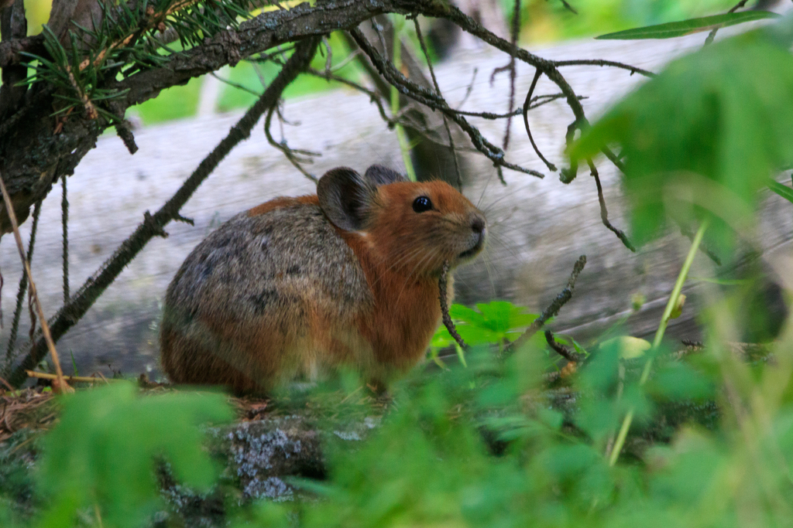
Talus composed of large stones in mountain gorges and valleys of forest and subalpine areas at elevations of 1800-3700 m. The Turkestan Red Pika is a typical rock dweller, using crevices among stones as shelters and pathways.
Turkestan Red Pikas are mainly diurnal. As in all rock-dwelling pikas, activity depends on insolation and weather. During high heat in Central Asia, Turkestan Red Pikas avoid emerging on talus surfaces. In other seasons, they are active throughout the day. Activity starts at sunrise and stops with evening dusk.
The Turkestan Red Pika eats a very wide variety of plants such as herbs, some trees and bushes, green mosses, and lichens. Turkestan Red Pikas hoard hay in hay piles. Hoarding starts in the first part of summer and lasts until September. Hay piles are 0.3-2 kg, but very large piles of 3-8 kg are also common. Hay piles are situated in rock crevices or under cover of large stones.
Breeding of Turkestan Red Pikas starts in March and lasts c.4 months. Young females become fertile at 3-3-5 months old. Adult female can breed two or maybe three times per season. Each female has 2-6 embryos. Gestation is c.30 days. Eyes open after 11-12 days. At 20 days of age, young start independent life.
The Turkestan Red Pika moves with short leaps. It usually moves along constant trails, emerging on surface only for a few meters; it probably uses pathways below talus surfaces. Two known home ranges were 350 m2 and 750 m2. Home ranges of males and females overlap. Turkestan Red Pikas are not aggressive. Densities are 800-1340 ind/km2. Old hay piles and large latrines under large flat stones identify occupied areas, but they are not easy to discover.
Marmota baibacina
| Head-body | Tail | Ear | Hind foot | Weight |
|---|---|---|---|---|
| 460-650 mm | 130-154 mm | not given mm | not given mm | 4200-6500 g |
| Activity | Emerges | September at Merke |
|---|---|---|
| Diurnal | Active 4-5 months each summer | Going underground. Hibernates for 7-8 months of the year. |
| Tier | Model and size | Manufacturer lists |
|---|---|---|
| Too large | no Sherman model fits | record the sighting or sign; do not expect a capture |
Assigned on reaches 6500 g, well above the largest model's intended animals. Tiers and dimensions are the manufacturer's; placing this species in one is our judgement.
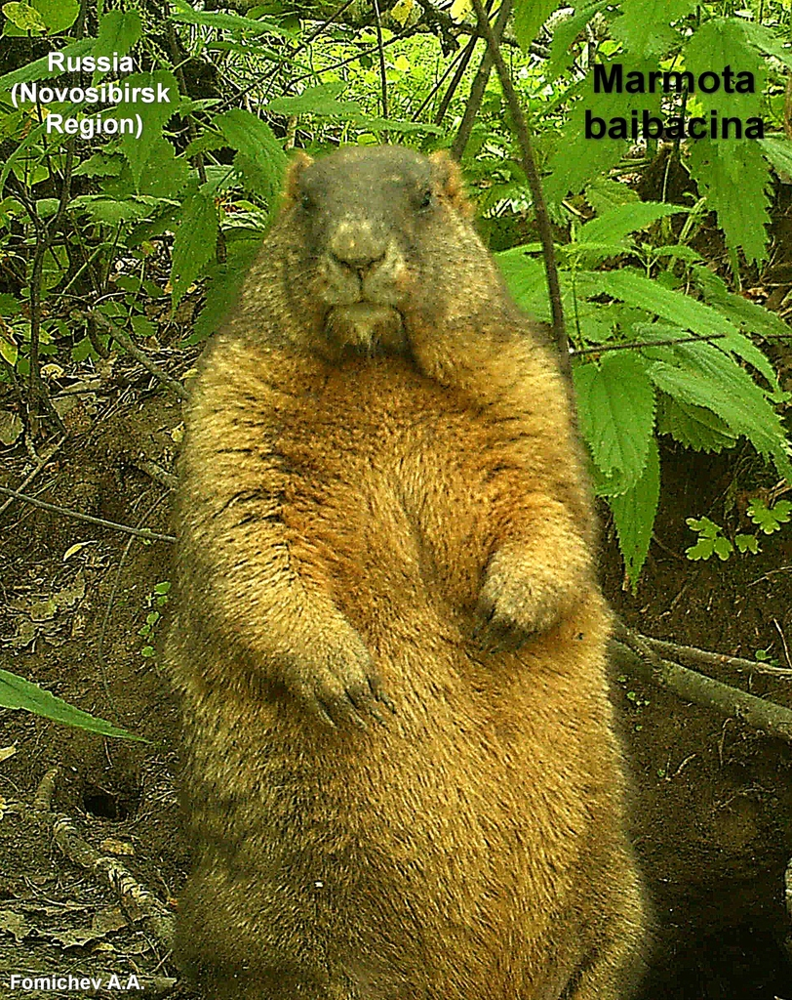
Gently sloping open or boulder strewn mountain steppes, meadows, and rocky outcroppings at elevations up to c.4000 m.
The Gray Marmot is diurnal and only active for 4-5 months each summer; it hibernates in burrows for the remaining 7-8 months of the year.
The Gray Marmot is social and lives in multiburrow colonies usually in groups of up to ten individuals that may communally hibernate. They frequently sit on burrow mounds and remain vigilant; alarm calls are short high-pitched whistles.
The Gray Marmot is herbivorous and feeds primarily on young grasses, shoots of forbs, and herbaceous material growing in open grasslands.
The Gray Marmot lives in multiburrow colonies. After emerging in May, mating occurs later in May and early June. Single litters of 2-6 young are born after gestation of 40 days. Young do not mature until three years old.
The Gray Marmot is social and lives in multiburrow colonies usually in groups of up to ten individuals that may communally hibernate. Dispersal occurs as three-year-olds begin to explore and move away from natal areas.
Marmota caudata
| Head-body | Tail | Ear | Hind foot | Weight |
|---|---|---|---|---|
| 500 mm | 182 mm | not given mm | not given mm | 3000-5000 g |
| Activity | Emerges | September at Merke |
|---|---|---|
| Diurnal | Late spring or early summer | Going underground. Aboveground only 4-5 months. |
| Tier | Model and size | Manufacturer lists |
|---|---|---|
| Too large | no Sherman model fits | record the sighting or sign; do not expect a capture |
Assigned on reaches 5000 g, well above the largest model's intended animals. Tiers and dimensions are the manufacturer's; placing this species in one is our judgement.
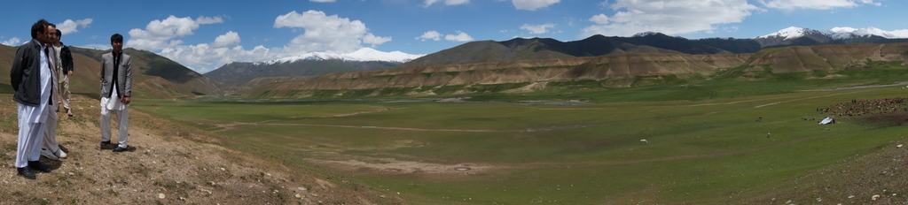
High elevation, low productivity alpine flats and meadows, often associated with glacial and terminal moraines. Alpine scrub with some dwarf juniper is also selected.
Long-tailed Marmots are diurnal. They are only aboveground for 4-5 months, emerging from burrows in late spring or early summer. Individuals often bask on rocks or at burrow entrances.
The Long-tailed Marmot is an herbivore that feeds primarily on young grasses, shoots of forbs, legumes, and small shrubs in open grasslands.
The Long-tailed Marmot lives in complex burrows where young are born. Mating occurs about the time of spring emergence, and c.17% of females breed. Litters of 2-6 young are born after gestation of 30-33 days. c.60% of juveniles die during the first year. Juveniles delay dispersal and remain in their natal group for at least three years.
The Long-tailed Marmot is social and lives in large colonies often consisting of many monogamous pairs, but groups of seven adults plus their young and yearlings are also reported. Densities are typically less than 0-5 ind/ha. Home ranges are large and average 3 ha. Group members nest communally and most often are amicable. Both sexes scent-mark near their burrows using orbital glands.
Spermophilus fulvus
| Head-body | Tail | Ear | Hind foot | Weight |
|---|---|---|---|---|
| 224-284 mm | 71-85 mm | not given mm | not given mm | 273-1100 g |
| Activity | Emerges | September at Merke |
|---|---|---|
| Diurnal | Aboveground March-April | Largely unavailable. Adults begin hibernating late July to September; juveniles September or October. |
| Tier | Model and size | Manufacturer lists |
|---|---|---|
| Large | XLKR / XLKSD, 3 x 3.5 x 13 in (7.6 x 8.9 x 33 cm) | kangaroo rats, ground squirrels, squirrels |
Assigned on head-body to 284 mm, to 1100 g. Tiers and dimensions are the manufacturer's; placing this species in one is our judgement.
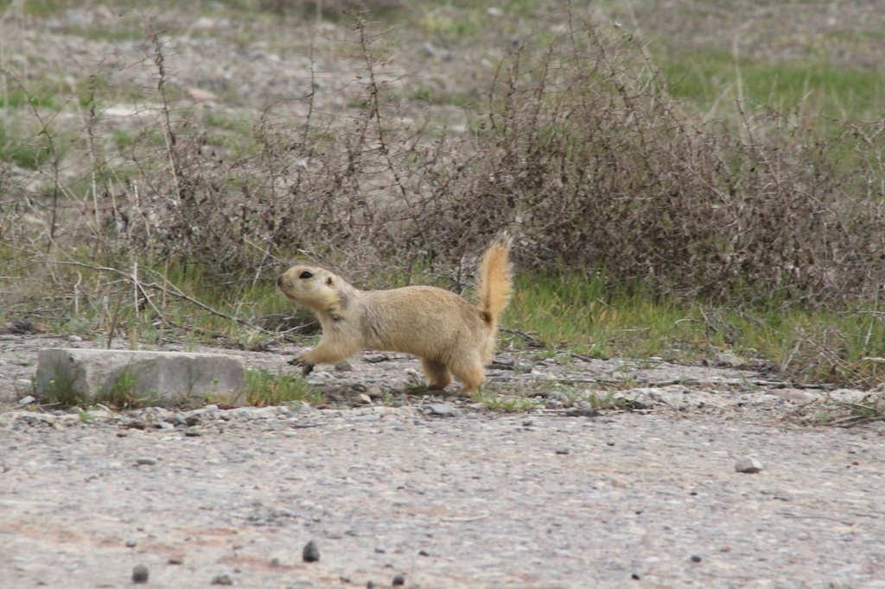
Semi-desert and desert arid grasslands, sometimes extending into open arid forests.
Yellow Ground Squirrels are diurnal and active aboveground in late spring, usually March-April. They are obligate hibernators in burrows, beginning in late July to September for adults and September or October for juveniles.
It is territorial and defends a large area around a single burrow; adult male home ranges are c.3 ha.
The Yellow Ground Squirrel is an herbivore, feeding mostly on bulbs, tubers, leaves, and shoots of desert grasses and forbs. It occasionally eats insects or scavenges animal matter.
The Yellow Ground Squirrel inhabits burrows with a vegetation-lined nest chamber in which young are born. Males appear to emerge slightly before females in spring. Individuals mate soon after emergence when male-female pairs enter burrows to copulate. Litters of 1-10 young are produced and emerge after c.50 days, weighing just under 200 g. Young grow quickly and disperse at c.500 g and can reproduce as yearlings.
The Yellow Ground Squirrel lives in loose low-density colonies (3-10 ind/ha). It is territorial and defends a large area around a single burrow; adult male home ranges are c.3 ha. Females are philopatric and form kin clusters and matrilines that share space. High-pitched vocalizations are commonly produced from colonies.
Sicista tianshanica
| Head-body | Tail | Ear | Hind foot | Weight |
|---|---|---|---|---|
| 57-73 mm | 102-113 mm | 12.5-15 mm | 17-19 mm | 7.2-13 g |
| Activity | Emerges | September at Merke |
|---|---|---|
| Mainly crepuscular and nocturnal, sometimes diurnal | Twilight and night | Juveniles only. Adults probably enter hibernation in August. |
| Tier | Model and size | Manufacturer lists |
|---|---|---|
| Small | SFA / SNA, 2 x 2.5 x 6.5 in (5.1 x 6.4 x 16.5 cm) | mice, shrews, voles |
Assigned on head-body to 73 mm, to 13 g. Tiers and dimensions are the manufacturer's; placing this species in one is our judgement.
Foothills to subalpine zone at elevations of 400-3500 m. Highest densities of Tian Shan Birch Mice were detected in upper limits of forests in subalpine zones, but they have been caught in a variety of habitats, such as edges of spruce forests, pastures, tall herb meadows, high mountain meadows, steppe-covered southern slopes, forest clearings, and subalpine meadows with junipers.
Tian Shan Birch Mice are mainly crepuscular and nocturnal, although they are sometimes active during the day, particularly young individuals. Pitfall traps after a cold night, normal in the high mountains, regularly contained individuals lying curled on their side with closed eyes, seemingly in a state of torpor. They usually quickly became active when warmed in the hand. Adults probably enter hibernation in August because only juveniles have been captured in September.
Tian Shan Birch Mice mostly eat insects and other animals such as snails, followed by seeds; fewer berries and herbs were found in stomachs. Proportion of insects and other animal food decreased from June to September, and quantities of seeds and berries increased.
Tian Shan Birch Mice breed once a year, producing litters of 3-7 young. Juveniles are sexually mature after their first winter. Reproduction begins in the first half of July, but elevation influences starting date and length of breeding seasons, being much shorter at higher elevations. In midlands of Trans-Ili Alatau, pregnant females were found in mid-June and late July. Young were first caught on 4 August. The oldest known Tian Shan Birch Mouse survived three winters.
Shelters and nests are in old decaying stumps and very rarely trunks of trees. In montane forest belt, Tian Shan Birch Mice were found to occupy a cluster of stumps rather than isolated stumps, suggesting that they may form colonies under certain conditions. In alpine meadows or steppes of foothills that lack mature trees and decaying stumps, they nest in grass nests or underground burrows. Densities of S. tianshanica sensu stricto captured in 2016 were 17-3 ind/100 trap-nights in the Trans-Ili Alatau.
Crocidura suaveolens
| Head-body | Tail | Ear | Hind foot | Weight |
|---|---|---|---|---|
| 47-80 mm | 25-40 mm | not given mm | not given mm | 6.5-9.4 g |
| Activity | Emerges | September at Merke |
|---|---|---|
| Mostly nocturnal | 10-14 activity periods through the dark hours | Active. |
| Tier | Model and size | Manufacturer lists |
|---|---|---|
| Small | SFA / SNA, 2 x 2.5 x 6.5 in (5.1 x 6.4 x 16.5 cm) | mice, shrews, voles |
Assigned on head-body to 80 mm, to ? g. Tiers and dimensions are the manufacturer's; placing this species in one is our judgement.
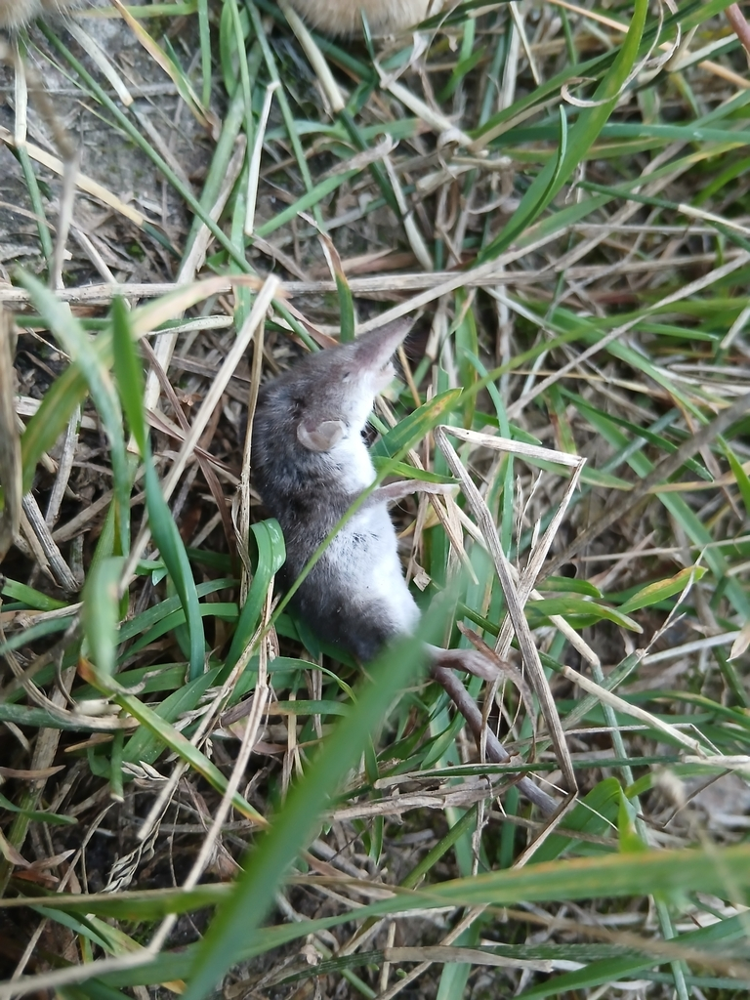
Desert, steppe, and forest zones, preferring habitats with bushes or high grass stands near watersides and ruderal vegetation at sites of abandoned human houses and tilled fields. The Lesser White-toothed Shrew is found in various human dwellings such as nomadic tents in the Gobi Desert and apartments in Moscow high-rise apartment buildings, including rural houses from European Russia to Tian Shan.
The Lesser White-toothed Shrew is active mostly at night. In Turkmenistan, 10-14 activity periods were observed during dark hours and averaged 24 minutes each; maximal duration of an activity period was 155 minutes.
In Trans-Ili Alatau, small beetles are most common in diets of Lesser White-toothed Shrews. Lesser White-toothed Shrews can dig insects out of the soil to up to 2 cm and hunt small geometrid moths by jumping and collecting them from grass blades. Daily food intake of Lesser White-toothed Shrews reaches 133% of body weight, but daily food intake of three times body weight was observed in Turkmenistan.
Nests of Lesser White-toothed Shrews are often built under driftwood or plant litter at watersides, in haystacks, and in other similar places. Lesser White-toothed Shrews most likely dig burrows themselves in semi-deserts of Central Asia. Reproduction can last 7-8 months, starting in early February in riparian woodlands of southern Tajikistan and from mid-March to late September in North Caucasus. Gestation lasts 24-32 days; numbers of embryos average 4-2-5-5/female (range 1-10).
Seasonal migrations have not been studied comprehensively but are quite distinct because abundance in dwellings, household buildings, haystacks, etc. always increases in autumn. Life span is no longer than 1-5 years, and a population is completely renewed during this time.
Sorex tundrensis
| Head-body | Tail | Ear | Hind foot | Weight |
|---|---|---|---|---|
| 61-86 mm | 20-38 mm | 7-8 mm | 13-15 mm | 8-11.5 g |
| Activity | Emerges | September at Merke |
|---|---|---|
| Active day and night | Throughout the 24 hours | Active. |
| Tier | Model and size | Manufacturer lists |
|---|---|---|
| Small | SFA / SNA, 2 x 2.5 x 6.5 in (5.1 x 6.4 x 16.5 cm) | mice, shrews, voles |
Assigned on head-body to 86 mm, to 8 g. Tiers and dimensions are the manufacturer's; placing this species in one is our judgement.
Large variety of alpine, subalpine, and arctic habitats, shrublands, and meadows, often dominated by small trees and shrubs such as willow and birch, generally preferring open bush habitats. It prefers to live in floodplain regions throughout taiga, avoiding forests, and in open areas between forests.
Tundra Shrews are active day and night and are primarily terrestrial.
Because Tundra Shrews live in various habitats, food items differ greatly among different geographical regions. For example, earthworms account for substantial proportions of diets in tundra, spiders and insects (commonly beetles) in taiga, and grasshoppers in steppe regions. Plant items are often included in diets, especially in winter; berries are eaten in southern regions of the distribution in Kazakhstan.
Breeding of the Tundra Shrew generally occurs from late winter until early summer. Breeding season usually starts in May, and first juveniles appear by mid-June. Reproduction lasts until late August, and lactating females can be captured in early September. Up to 100% of female young-of-the-year reproduce in northern populations in some years, and this distinguishes Tundra Shrew from other species of Sorex. A female has up to three litters in a breeding season.
The Tundra Shrew is probably most similar to the Common Shrew in its general ecology. It is solitary except when breeding and rearing young.